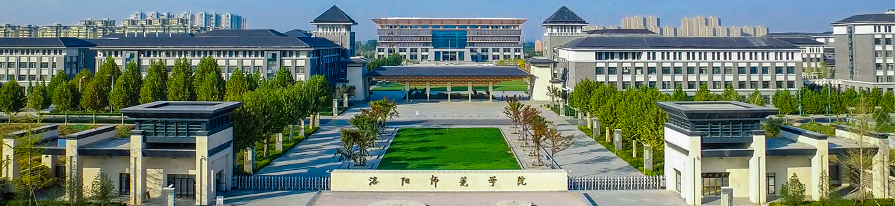

2018-05-02 10:45:20 作者:图文/党委学工部 信息发布/党委学工部 浏览量:10
4月27日上午，2018年度河南省高校辅导员工作交流暨现场会在南阳师范学 院举行，我校与郑州大学作为两所辅导员队伍建设的代表高校在大会上作经验交流，校党委副书记王万 鹏作了典型发言。省委高校工委专职委员陈垠亭出席并致辞，省教育厅思政处处长李培俊、副处长徐军 保出席了会议。来自全省各高校的主管校领导、学工部部长、第四届河南省高校辅导员年度人物、辅导 员“双巡”报告团代表、第七届河南省高校辅导员素质能力大赛参赛选手、各高校观摩人员参加会议。
王万鹏以《坚持多措并举，大力加强辅导员队伍建设》为题系统介绍了我校 坚持以新时代习近平中国特色社会主义思想为引导，全面贯彻落实全国全省高校思想政治工作会议精神 和《普通高等学校辅导员队伍建设规定》精神，围绕立德树人根本任务，坚持“以学生为中心”的根本 理念，聚焦辅导员专业化职业化双线协同发展，多措并举，努力提升辅导员职业能力水平的整体构架， 并着重从四个方面介绍了学校在辅导员队伍建设方面的具体做法：一是搭建各类平台，促进辅导员持续 发展。以辅导员精品项目建设、优秀论文、优秀案例评选等活动为抓手，探索育人规律、提升理论素养 ，全面提升辅导员专业水平。二是加强学习培训，提升辅导员专业素质。定期举办辅导员培训班、组织 外出培训，严格辅导员的管理和考核，深入实施辅导员工作“三个十”，以辅导员素质能力大赛为契机 ，全面提升辅导员职业胜任力。三是注重人文关怀，夯实辅导员发展保障。学校对辅导员实行双线晋升 制度，全面提高辅导员的经济待遇，提升辅导员职业内涵。四是表彰先进典型，彰显辅导员职业价值。 通过十佳辅导员、优秀辅导员评选活动，选树典型、榜样引领，增强了广大师生对辅导员工作的职业认 同。
大会还对10名第四届河南省高校辅导员年度人物进行了表彰，我校音乐学院 辅导员马天天作为第四届河南省高校辅导员年度人物进行了事迹视频展示，河南省委高校工委专职委员 陈垠亭为马天天颁发了证书和奖杯。
2018年河南省高校辅导员工作交流现场会由河南省委高校工委、河南省教育 厅主办，南阳师范学院承办，旨在展示全省高校辅导员工作成果、展现高校辅导员风采、交流高校辅导 员工作经验，我校受邀在会上作经验交流，展示了我校辅导员队伍建设的亮点和成果，宣传了学校，也 体现出省教育厅对我校辅导员队伍建设的充分肯定。
王万鹏以《坚持多措并举，大力加强辅导员队伍建设》为题系统介绍了我校 坚持以新时代习近平中国特色社会主义思想为引导，全面贯彻落实全国全省高校思想政治工作会议精神 和《普通高等学校辅导员队伍建设规定》精神，围绕立德树人根本任务，坚持“以学生为中心”的根本 理念，聚焦辅导员专业化职业化双线协同发展，多措并举，努力提升辅导员职业能力水平的整体构架， 并着重从四个方面介绍了学校在辅导员队伍建设方面的具体做法：一是搭建各类平台，促进辅导员持续 发展。以辅导员精品项目建设、优秀论文、优秀案例评选等活动为抓手，探索育人规律、提升理论素养 ，全面提升辅导员专业水平。二是加强学习培训，提升辅导员专业素质。定期举办辅导员培训班、组织 外出培训，严格辅导员的管理和考核，深入实施辅导员工作“三个十”，以辅导员素质能力大赛为契机 ，全面提升辅导员职业胜任力。三是注重人文关怀，夯实辅导员发展保障。学校对辅导员实行双线晋升 制度，全面提高辅导员的经济待遇，提升辅导员职业内涵。四是表彰先进典型，彰显辅导员职业价值。 通过十佳辅导员、优秀辅导员评选活动，选树典型、榜样引领，增强了广大师生对辅导员工作的职业认 同。
大会还对10名第四届河南省高校辅导员年度人物进行了表彰，我校音乐学院 辅导员马天天作为第四届河南省高校辅导员年度人物进行了事迹视频展示，河南省委高校工委专职委员 陈垠亭为马天天颁发了证书和奖杯。
| 首页 上一篇 下一篇 尾页 页次:1/1页 共10篇文章 |